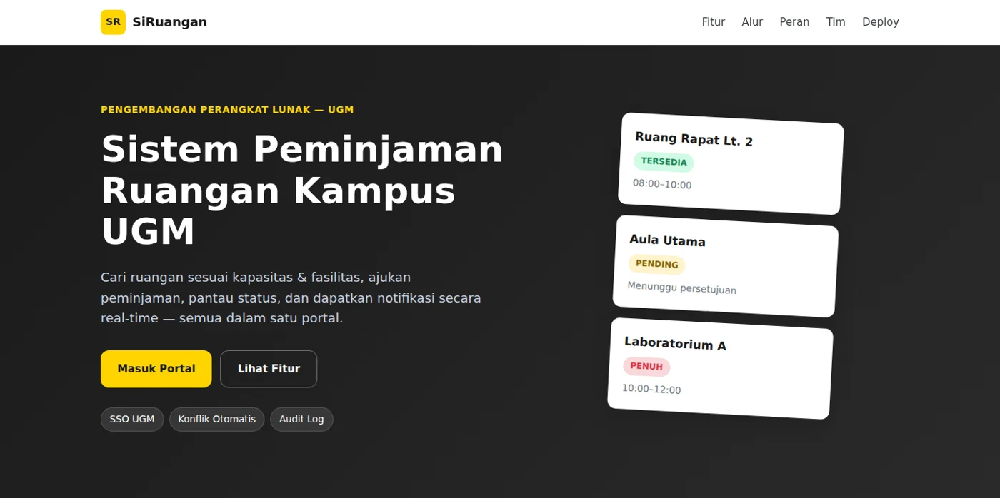
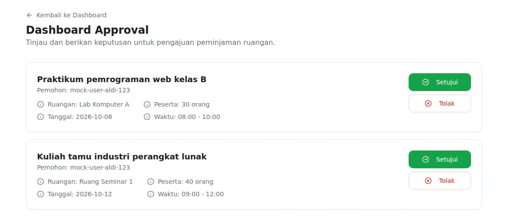
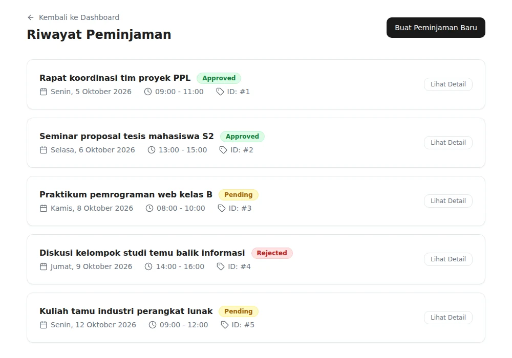
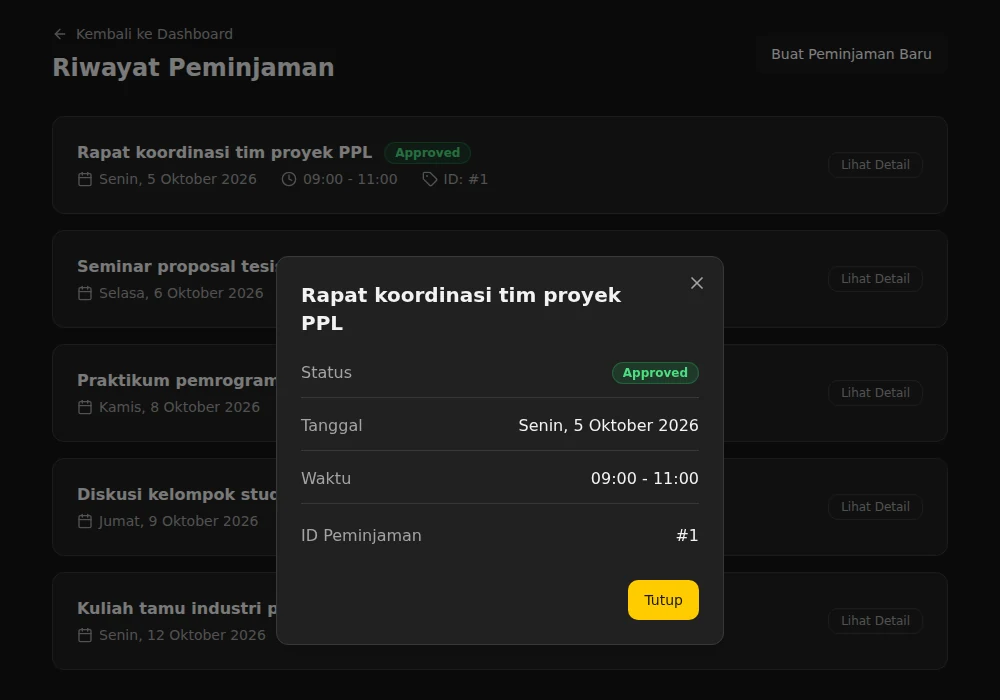

SiRuangan: sistem peminjaman ruangan kampus UGM
Aplikasi fullstack untuk mengajukan dan menyetujui peminjaman ruangan di lingkungan kampus. Dikerjakan tim empat orang dengan metode Agile/Scrum. Peran saya ada di fitur booking, dashboard persetujuan, dan penyambungan antarmuka dengan API.
Yang saya kerjakan
- Membuat endpoint API booking di backend FastAPI.
- Membangun dashboard persetujuan untuk admin di Next.js. Awalnya datanya tertanam di kode, lalu saya ubah agar dinamis dan terhubung ke database.
- Membuat halaman profil pengguna yang terhubung dengan Google OAuth.
- Merancang jendela detail booking yang responsif dari halaman riwayat, lengkap dengan mode gelap.
- Memperbaiki routing proxy
/apidi Next.js (trailing slash dan redirect basePath ganda) supaya permintaan sampai ke backend dengan benar.




Tangkapan layar diambil dari aplikasi yang saya jalankan di komputer lokal dengan akun uji coba dan data contoh.